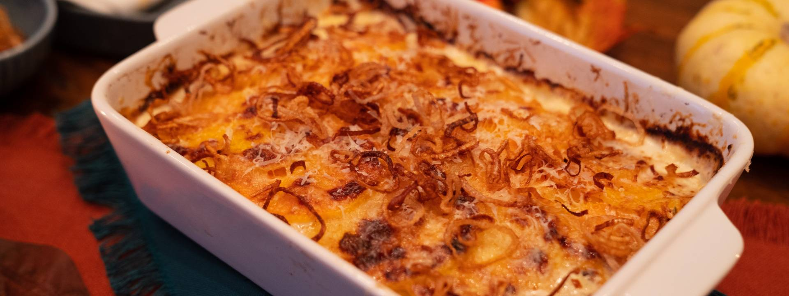

POTATO AND BUTTERNUT SQUASH GRATIN WITH CRISPY SHALLOTS

CHANGE THIS DESCRIPTION
paragraph descibing the dish
Ingredients
Crispy Shallots
- 3 shallots, peeled
- 2 cups neutral oil such as canola
- Kosher salt
Gratin
- 1 ½ pounds butternut squash, neck only, ideally less than 3” diameter
- 1 ½ pounds large waxy potatoes, such as red, about 3 medium potatoes
- 16 oz (2 cups) whole milk
- 16 oz (2 cups) heavy cream/li>
- 4 large garlic cloves, smashed
- 2 sprigs thyme
- 2 bay leaves
- 4 ounces gruyere cheese, finely grated
- 1 tablespoon kosher salt
- A few cracks of freshly ground black pepper
- Butter, for greasing
Steps
- Preheat the oven to 400°F (205°C).
- Bring the milk and cream to a low boil over medium heat in a large saucepan and add garlic, herbs and seasoning. Stir occasionally to ensure a film does not form on the surface. Once boiling, immediately lower the heat and let simmer gently for 2-3 minutes.
- While the cream is heating, peel the squash and potatoes and discard skins. Using a mandolin or sharp knife, thinly slice the squash into ⅛-inch even slices. Repeat with the potatoes.
- Carefully slide the squash and potatoes into the cream and simmer for about 7 minutes, until the slices are just barely tender--they should hold their shape and retain a bite. Use a large slotted spoon or spider to remove the vegetables from the cream and set on a large baking sheet or dish to cool slightly. Reserved the remaining seasoned cream for building the gratin.
- Grease an 8x8-inch or 9x6-inch baking dish lightly with butter. Alternating between squash and potatoes, lay one slice at a time down into rows, ensuring that the vegetables are all slightly overlapping one another. Once the bottom layer is complete and covers the entire dish, drizzle about two tablespoons of reserved cream over the vegetables, followed by a sprinkle of a quarter of the cheese (about 1 ounce). Repeat this process with remaining vegetables, topping each layer with more cream and Gruyere, until you have at least 3 layers and no vegetables remain.
- To finish, pour about ¼ cup of the cream all over the vegetables, then top with the remainder of Gruyere.
- Bake for 20-25 minutes, or until the cheese is bubbling and golden brown. If the cheese is not browned on top, broil on high for about 1 minute, keeping a close eye so it doesn’t burn. Allow to stand for 10 minutes before serving.
- While the gratin is baking, make the crispy shallots: Place the oil in a medium saucepan over medium heat. Line a baking sheet with paper towels.
- Using a mandolin or a very sharp knife, cut the shallots into very thin rings, about ⅛-inch, and use your hands to separate the rings. Add the shallots to the hot oil and let the shallots brown gently, stirring occasionally so they don’t stick together, and cook for about 3-5 minutes until golden brown. Turn down the heat if the shallots brown too quickly.
- Use a slotted spoon or spider to remove the shallots from the oil, carefully shaking off any excess oil, and transfer the shallots to the prepared baking sheet and sprinkle with kosher salt. Set aside until ready to use.
- To serve, once the gratin has rested, top the dish with crispy shallots and serve.